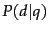
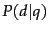
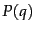
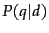
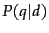

Next:
Estimating the query generation
Up:
The query likelihood model
Previous:
The query likelihood model
Contents
Index
Using query likelihood language models in IR
Language modeling is a quite general formal approach to IR, with many variant realizations. The original and basic method for using language models in IR is the query likelihood model . In it, we construct from each document  in the collection a language model
in the collection a language model  . Our goal is to rank documents by , where the probability of a document is interpreted as the likelihood that it is relevant to the query. Using Bayes rule (as introduced in probirsec), we have:
. Our goal is to rank documents by , where the probability of a document is interpreted as the likelihood that it is relevant to the query. Using Bayes rule (as introduced in probirsec), we have:
 is the same for all documents, and so can be ignored. The prior probability of a document
 is often treated as uniform across all
and so it can also be ignored, but we could implement a genuine prior which could include criteria like authority, length, genre, newness, and number of previous people who have read the document. But, given these simplifications, we return results ranked by simply
, the probability of the query
is often treated as uniform across all
and so it can also be ignored, but we could implement a genuine prior which could include criteria like authority, length, genre, newness, and number of previous people who have read the document. But, given these simplifications, we return results ranked by simply
, the probability of the query
 under the language model derived from
. The Language Modeling approach thus attempts to model the query generation process: Documents are ranked by the probability that a query would be observed as a random sample from the respective document model.
under the language model derived from
. The Language Modeling approach thus attempts to model the query generation process: Documents are ranked by the probability that a query would be observed as a random sample from the respective document model.
The most common way to do this is using the multinomial unigram language model, which is equivalent to a multinomial Naive Bayes model (page 13.3 ), where the documents are the classes, each treated in the estimation as a separate ``language''. Under this model, we have that:
where, again
 is the multinomial coefficient for the query
, which we will henceforth ignore, since it is a constant for a particular query.
is the multinomial coefficient for the query
, which we will henceforth ignore, since it is a constant for a particular query.
For retrieval based on a language model (henceforth LM ), we treat the generation of queries as a random process. The approach is to
- Infer a LM for each document.
- Estimate
 , the probability of generating the query according to each of these document models.
, the probability of generating the query according to each of these document models.
- Rank the documents according to these probabilities.
The intuition of the basic model is that the user has a prototype document in mind, and generates a query based on words that appear in this document. Often, users have a reasonable idea of terms that are likely to occur in documents of interest and they will choose query terms that distinguish these documents from others in the collection.
![[*]](http://nlp.stanford.edu/IR-book/html/icons/footnote.png) Collection statistics are an integral part of the language model, rather than being used heuristically as in many other approaches.
Collection statistics are an integral part of the language model, rather than being used heuristically as in many other approaches.
Next:
Estimating the query generation
Up:
The query likelihood model
Previous:
The query likelihood model
Contents
Index
© 2008 Cambridge University Press
This is an automatically generated page. In case of formatting errors you may want to look at the PDF edition of the book.
2009-04-07